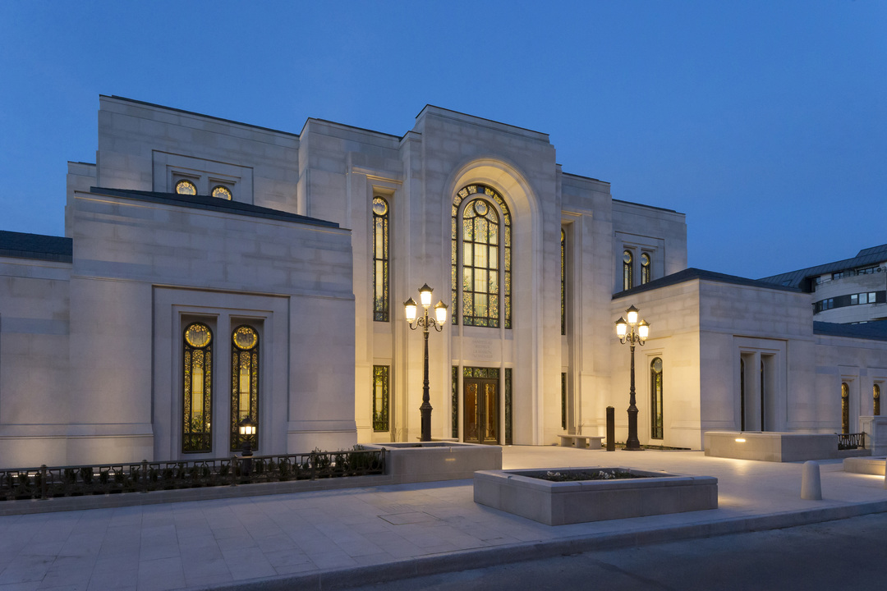
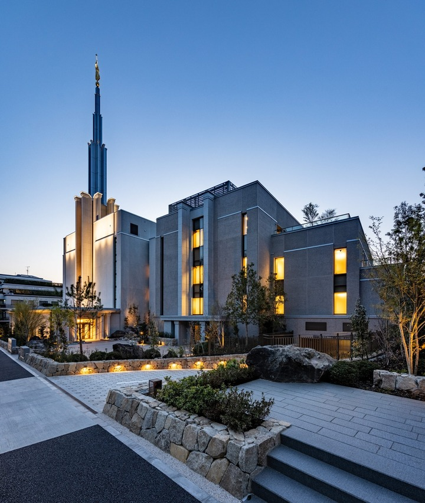
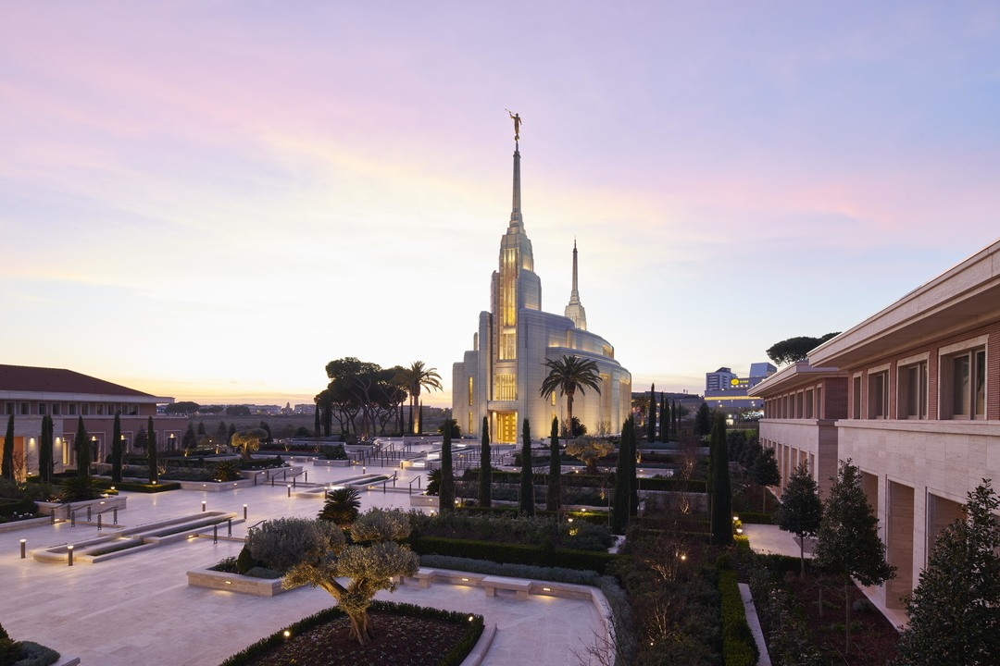
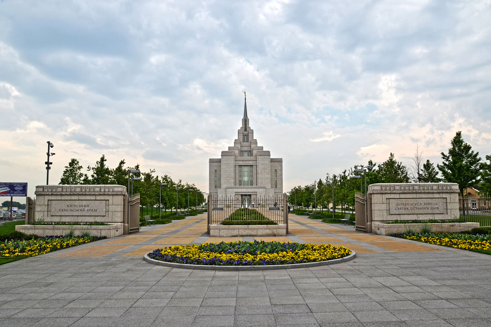

Temple Album
☰
Home
Old
New
Large
Small
Home
Salt Lake Temple
Nauvoo Temple
Kirtland Temple

Paris France Temple

Tokyo Japan Temple

Rome Italy Temple
Bern Switzerland Temple

Kyiv Ukraine Temple
Accra Ghana Temple